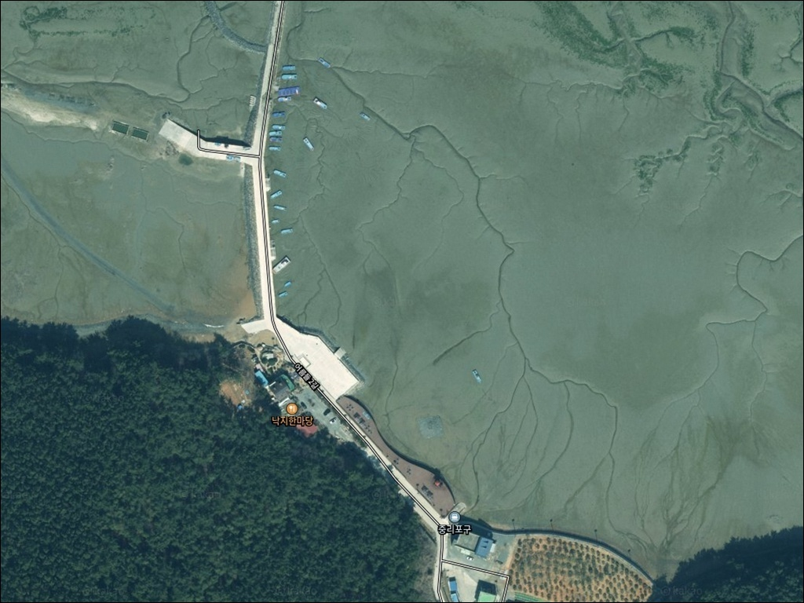
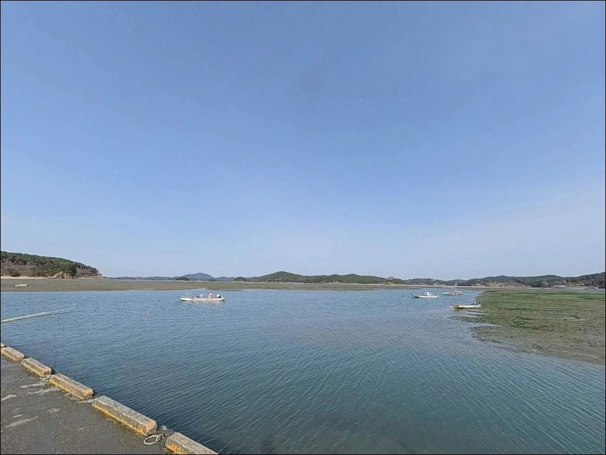
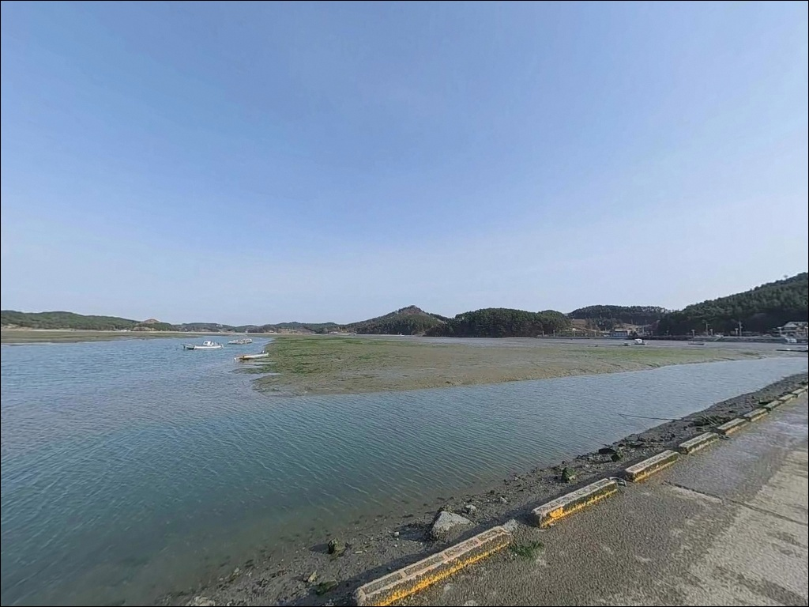
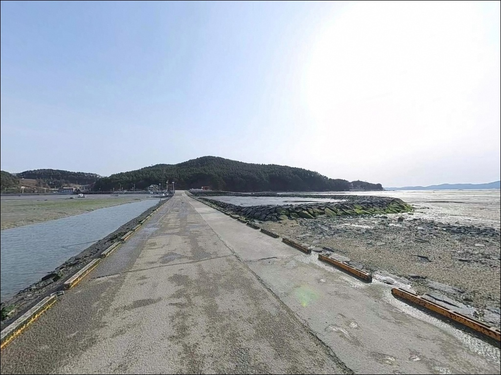
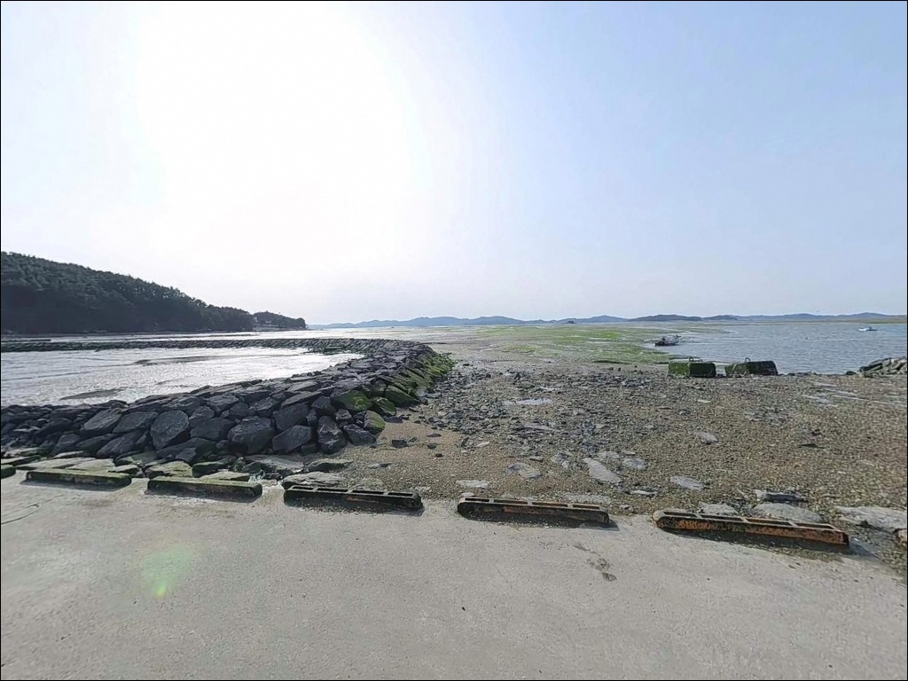
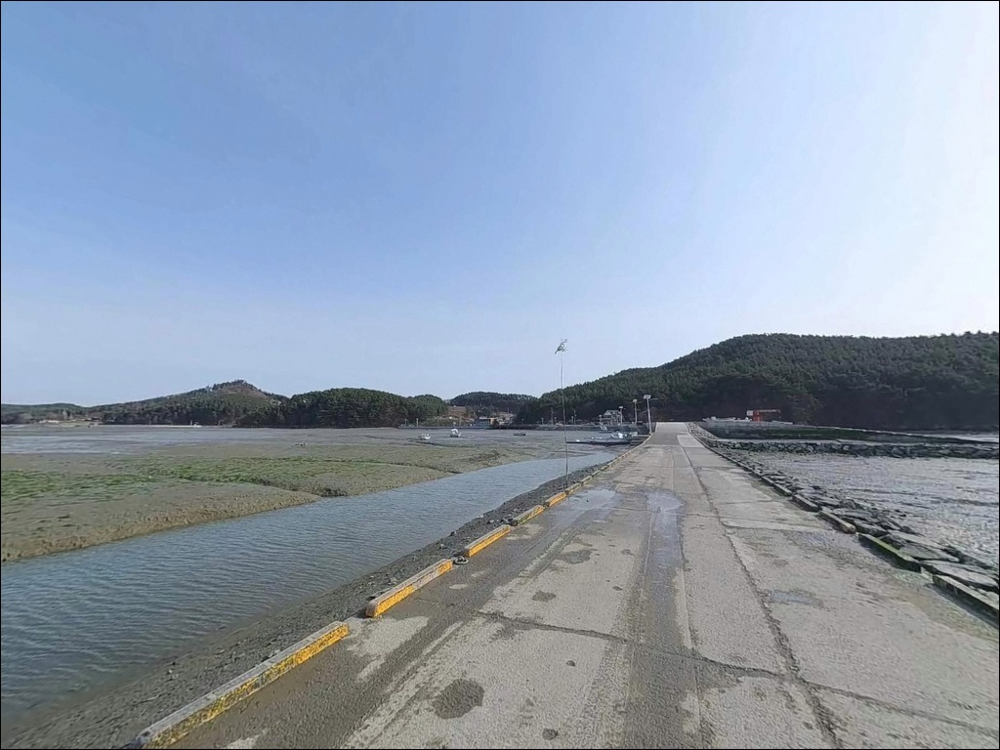
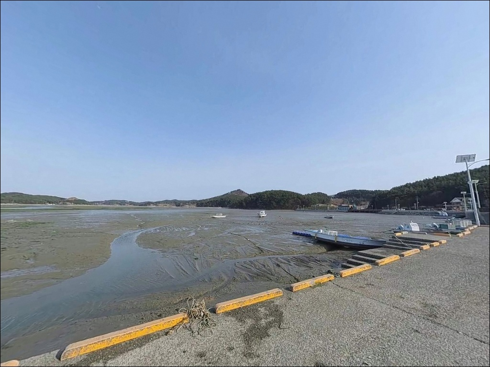
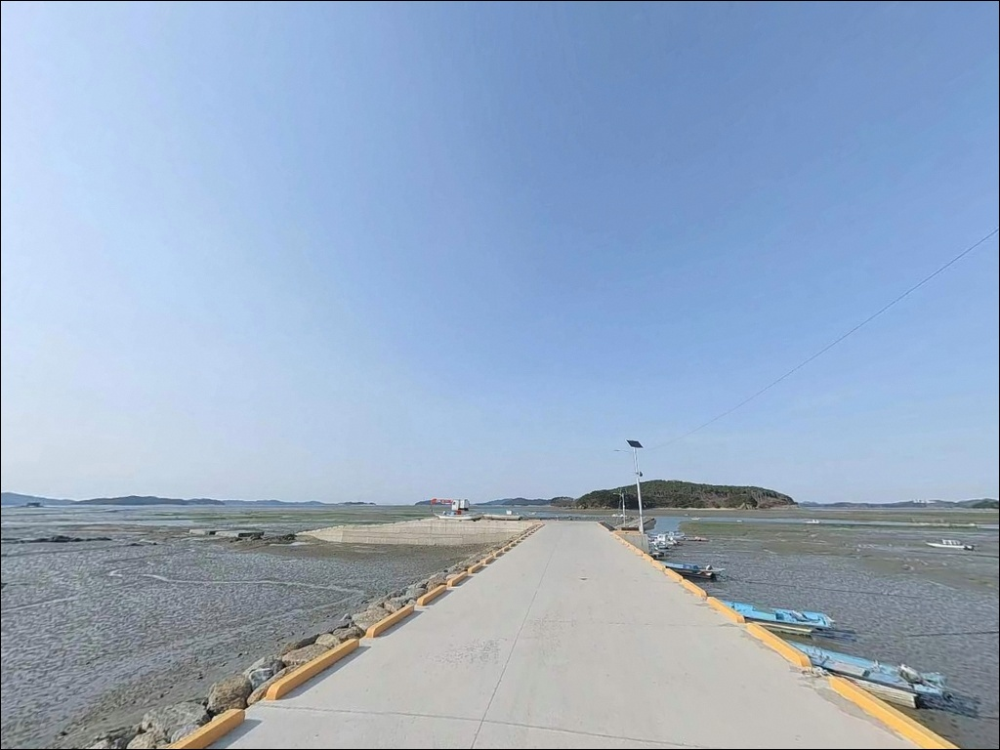
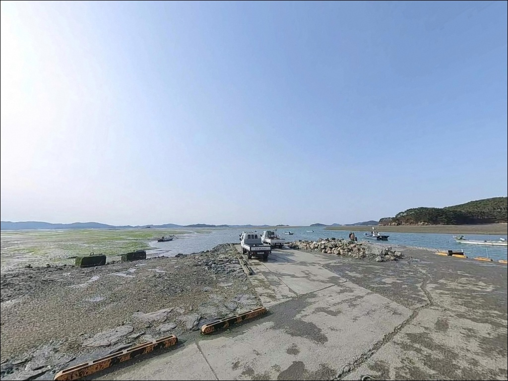

중리포구, 충남 서산시 자연의 여백을 느낄 수 있는 차박, 낚시 명소
이 페이지에는 광고(제휴 링크 포함)가 있으며, 광고 링크를 통해 구매하면 운영자가 판매 수익 또는 수수료를 받을 수 있습니다. 포인트 사진: 카카오맵 스카이뷰·로드뷰. 이 페이지의 지도·사진 이미지는 카카오맵의 실제 서비스 이미지와 다를 수 있습니다.

포인트 안내
중리포구
충남 서산시 지곡면 중왕리 196-26
물때를 확인하지 않고 중리포구에 도착하면,
간조 시에는 선착장 앞이 갯벌로 변해
낚시 자체가 불가능한 상황을 맞닥뜨릴 수 있습니다.
가로림만 안쪽 내만 구조 특성상 조차가 크고 수심이 얕아,
만조 전후 2~3시간을 놓치면
그날 출조는 사실상 헛걸음이 됩니다.
이 글은 중리포구의 지형 구조, 물때 판단 기준,
낚시 방식 적합성, 진입 여건에 집중합니다.
조황 단정이나 특정 어종 보장은
이 글의 범위에 포함되지 않습니다.

1. 진입 동선과 포인트 접근성
중리포구는 서해안고속도로 서산IC에서
대산·지곡 방면으로 진입한 뒤
중왕교차로를 거쳐 접근하는 동선이 기본입니다.
포구까지 이어지는 도로는 포장 구간이 이어지며,
농어촌 마을 진입형 구조라
소형~중형 차량 기준으로 접근은 무난한 편입니다.
다만 포구 진입 직전 구간의 도로 폭과
마지막 회차 공간은 넉넉하지 않을 수 있습니다.
대형 SUV나 캠핑 장비를 싣고 가는 경우라면
출발 전 위성지도로 진입로를 먼저 확인하고
회차 가능 여부도 함께 점검하는 것이
포구 앞에서 당황하는 상황을 막는 방법입니다.
주차는 선착장 인근 공터나 포구 주변 도로변을
활용하는 방식이 일반적입니다.
중리어촌체험마을과 인접해 있어
체험객용 주차 공간이 어느 정도 마련되어 있을 가능성은 있으나,
어선 조업 동선과 겹치지 않는 자리가 우선이며
허용 범위는 현장에서 직접 확인하는 편이 안전합니다.

2. 차박 환경과 야간 체류 여건
중왕리는 약 140가구 규모의 소형 어촌 마을입니다.
야간에는 차량 통행이 줄어들어 조용한 편이지만,
민가와 가까운 구조라
프라이버시 확보 면에서 한계가 있습니다.
차박을 메인으로 삼기보다는
낚시 후 짧게 머무는 보조 용도로 접근하는 것이
현실에 맞는 판단입니다.
마을 구역 내에 가로등이 일부 설치되어 있을 가능성이 있지만,
선착장 끝단까지 조명이 충분하다고 보기 어렵습니다.
야간에는 헤드랜턴을 반드시 챙겨야 하며,
갯벌 인접 구간은 물이 들어오는 속도가 빠를 수 있어
야간 물때 변화를 수시로 확인하는 것이 기본입니다.
가로림만 안쪽 내만 특성상 외해 파도 영향은 적고
바람도 비교적 덜한 편입니다.
다만 마을과 포구가 가까이 붙어 있어
이른 시간부터 어민들의 조업 준비가 시작될 수 있으므로,
장시간 차박보다는 당일 출조 베이스로 활용하는 편이
주민 생활과 마찰을 줄이는 방법입니다.

3. 주변 편의시설 및 인프라 현황
중리포구 반경 3km 이내에서 편의점이나 주유소를
확정적으로 안내하기 어렵습니다.
지곡면 소재지 방면으로 이동해야 할 가능성이 있으므로,
식수, 얼음, 낚시 소품은 출발 전에 모두 준비하고
현장에 도착하는 것이 안전합니다.
포구에서 가까운 거리에 인근 식당 2곳이 있습니다.
낙지요리 전문 낙지한마당(지곡면 어름들2길 83)과
박속낙지탕을 내는 왕산포횟집(지곡면 중왕뱃마을길)이
이 권역에서 확인되는 식당입니다.
낚시 출조 전후에 현지 음식을 곁들이기 좋은 위치입니다.
중리어촌체험마을(어름들2길 66, 041-665-9498)은
바지락 캐기, 낙지잡기 등 체험 프로그램을 운영하는 곳으로,
포구 인근에서 운영되고 있습니다.
체험 프로그램과 낚시 출조를 함께 묶는 일정이라면
사전에 운영 여부를 문의해두는 편이 좋습니다.

4. 진입 전 반드시 챙겨야 할 준비사항
중리포구 방문 전 가장 먼저 확인해야 할 것은
물때입니다.
가로림만은 서해 중부 기준 조차가 큰 해역으로,
중왕리 위치 특성상 간조 시에는 선착장 앞이
갯벌로 넓게 노출됩니다.
바다타임에서 이 지역 기준 물때를 먼저 확인하고,
만조 전후 2~3시간을 중심으로
출발 시각을 맞추는 것이 기본 전략입니다.
가로림만 전역은 2016년 해양수산부가 지정한
해양보호구역에 포함되어 있습니다.
낚시 자체를 일률적으로 금지하는 것은 아니지만,
구역 내 규정에 따른 제한이 있을 수 있으므로
출발 전 태안해양경찰서 또는 서산시 해양수산 부서에
확인하는 것이 선행되어야 합니다.
갯벌 포인트 특성상 미끄럼 사고에 주의해야 합니다.
야간 낚시 시에는 헤드랜턴과 구명조끼를 반드시 착용하고,
갯벌 쪽으로 깊이 들어가는 행위는
피창조 시 고립 위험으로 이어질 수 있습니다.
챙겨야 할 채비 중 바늘과 봉돌은 여분을 넉넉히
준비하는 편이 좋습니다.

5. 지형이 만드는 낚시 여건 — 내만 갯벌 포인트의 특성
가로림만은 남북 길이 약 25km, 폭 2~3km의
호리병 형태 반폐쇄성 내만입니다.
북쪽 입구로만 바닷물이 드나드는 구조여서
조석 간만의 차가 크고 만 안쪽으로 갈수록
수심이 얕아지는 패턴을 보입니다.
중왕리는 이 만의 안쪽에 해당해,
간조 시 갯벌이 수백 미터 이상 넓게 노출되는
지형 조건을 갖추고 있습니다.
원투낚시 기준으로 보면 만조 전후에 포구 앞 수위가 올라오면서
선착장 끝단 수심이 어느 정도 확보됩니다.
바닥은 점토질 갯벌 성격이 강한 편으로,
채비가 바닥에 안착하기 좋은 여건입니다.
다만 밑걸림보다는 갯벌 흡착으로
채비 회수가 무거워질 수 있는 지형이라
봉돌 무게 선택에 주의가 필요합니다.
조류는 외해형 방파제처럼 강하게 흐르지 않고,
만 안에서 물이 들고 나는 흐름을 따라
갯골(수로) 주변을 중심으로 형성됩니다.
갯골 입구 방향을 향해 채비를 던지면
흐름을 따라 올라오는 어종을 만날 가능성이
높아지는 편입니다.
최신 조황은 출발 전에 꼭 검색해 보시기 바랍니다.


6. 중리포구에 어울리는 낚시 스타일
이 포인트에서 가장 기본이 되는 낚시는
원투낚시입니다.
갯벌 위에서 내만 수로 방향으로 채비를 멀리 던지고
만조 전후 바닥에서 반응을 기다리는 방식이
이 지형 구조에 잘 맞습니다.
갯지렁이 계열 미끼를 사용하면
망둥어를 포함한 갯벌성 어종을
기대해볼 수 있는 편이며,
특히 가을철은 씨알이 굵어지는 시기로 알려져 있습니다.
찌낚시도 만조 시 선착장 주변 수위가 올라오면
시도해볼 만한 스타일입니다.
깊은 수심은 기대하기 어렵지만
잔잔한 내만 환경에서
가벼운 찌채비로 표층~중층을 탐색하는 방식은
소형 어종 손맛을 기대하는 낚시에 적합합니다.
루어낚시는 갯골 수로 주변에서
소형 지그헤드 채비로 시도해볼 수 있습니다.
우럭이나 노래미류 등 갯벌·암초 주변 어종을 노리는 방식으로,
만조 전후 수위가 충분히 올라온 구간에서
가볍게 탐색하는 접근이 이 포인트 지형 조건과 잘 맞습니다.
다만 외해형 루어낚시처럼 강한 조류 반응을
기대하기는 어려운 편입니다.

7. 대안 포인트와 플랜 B 동선
중리포구에서 물때가 맞지 않거나
조황이 기대에 못 미칠 때
가장 먼저 생각해볼 수 있는 대안은
인근 왕산포구입니다.
같은 중왕리 해안선 상에 위치한 포구로
갯벌과 포구를 함께 갖춘 비슷한 성격의 자리이며,
동선 이동 없이 짧게 둘러볼 수 있습니다.
보다 다양한 낚시 스타일을 원한다면
10~13km 거리의 삼길포항(서산시 대산읍)이
이 권역에서 대표적인 대형 포인트입니다.
방파제 원투낚시부터 루어낚시, 선상 낚시까지
다양한 방식이 가능하며,
화장실과 주차장, 낚시용품점 등
편의시설도 갖춰진 곳으로 알려져 있습니다.
중리포구와 성격이 완전히 달라
갯벌 조용한 낚시에서 방파제 외해 낚시로
바꾸고 싶을 때 이동하기 좋은 선택지입니다.
외해 접근이 가능한 방파제 포인트를 원한다면
벌천포 방파제나 구도항도
가로림만 외곽에서 수심과 조류가
보다 안정적으로 확보되는 자리입니다.
중리포구 대비 조류 흐름이 살아있는 편이라
루어낚시 반응이 더 나은 조건을 기대할 수 있습니다.

물때를 알면 중리포구가 달리 보입니다
원투낚시로 조용하게 갯벌 낚시를 즐기고 싶은 낚시인이라면
중리포구의 지형 조건은 잘 맞는 구조입니다.
외해형 방파제처럼 강한 조류나 깊은 수심은 없지만,
바람이 덜하고 잔잔한 내만 환경에서
조용하게 하룻밤을 보낼 수 있는 곳이기도 합니다.
가을철 망둥어 시즌에 만조 타이밍을 맞추면
기대해볼 만한 포인트입니다.
반면 물때 계산 없이 찾아가거나
간조 시간대에 도착하면
낚시 자리 자체가 사라진 상황을 맞닥뜨릴 수 있습니다.
가로림만 해양보호구역 내 낚시 규정 확인,
만조 전후 타이밍 계산, 자급 준비,
이 세 가지를 갖추고 찾아간다면
소박하지만 기억에 남는 출조가 될 수 있는 곳입니다.
갯벌 옆 조용한 어촌 포구에서
낚시 채비를 던져두고 하룻밤 머무는 차박을 원한다면,
민가 인접 여건을 감안한 조용한 체류가
이 포인트를 제대로 즐기는 방식입니다.